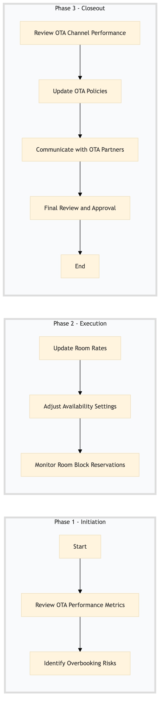

| Role | Steps |
|---|---|
| Revenue Manager | 1.1 1.2 2.1 2.2 2.3 3.1 3.2 |
| Executive Housekeeper | 3.4 |
| Step | Name | Role | System | Input | Output | KPI | Dec? | Exc? | Pain Point / Risk |
|---|---|---|---|---|---|---|---|---|---|
| 1.1 | Review OTA Performance Metrics | Revenue Manager | Oracle OPERA Cloud | Daily performance reports from Oracle OPERA Cloud | OTA performance analysis report | Completion within 30 minutes | N | Y | Accurate data synchronization between Oracle OPERA Cloud and OTA systems |
| 1.2 | Identify Overbooking Risks | Revenue Manager | IDeaS G3 RMS | OTA performance analysis report | Overbooking risk assessment | Completion within 15 minutes | Y | N | Real-time data processing and analysis |
| 2.1 | Update Room Rates | Revenue Manager | SynXis CRS | Overbooking risk assessment | Updated room rates in SynXis CRS | Completion within 45 minutes | N | Y | Manual rate updates across multiple OTA systems |
| 2.2 | Adjust Availability Settings | Revenue Manager | Oracle OPERA Cloud | Updated room rates in SynXis CRS | Adjusted availability settings in Oracle OPERA Cloud | Completion within 30 minutes | N | Y | Synchronization issues between Oracle OPERA Cloud and OTA systems |
| 2.3 | Monitor Room Block Reservations | Revenue Manager | Oracle OPERA Cloud | Adjusted availability settings in Oracle OPERA Cloud | Room block reservation report | Completion within 20 minutes | Y | N | Real-time monitoring of room block reservations |
| 3.1 | Review OTA Channel Performance | Revenue Manager | Oracle OPERA Cloud | Room block reservation report | OTA channel performance review | Completion within 25 minutes | N | Y | Accurate data synchronization between Oracle OPERA Cloud and OTA systems |
| 3.2 | Update OTA Policies | Revenue Manager | SynXis CRS | OTA channel performance review | Updated OTA policies in SynXis CRS | Completion within 40 minutes | N | Y | Manual policy updates across multiple OTA systems |
| 3.3 | Communicate with OTA Partners | Revenue Manager | Oracle OPERA Cloud | Updated OTA policies in SynXis CRS | OTA partner communication log | Completion within 35 minutes | Y | N | Effective communication with OTA partners |
| 3.4 | Final Review and Approval | Executive Housekeeper | Oracle OPERA Cloud | OTA partner communication log | Approved OTA channel management plan | Completion within 20 minutes | N | Y | Coordination between different departments for final approval |
This process outlines the management of OTA channels at a Marriott full-service hotel to ensure optimal room rates and availability are maintained across all online travel agencies.